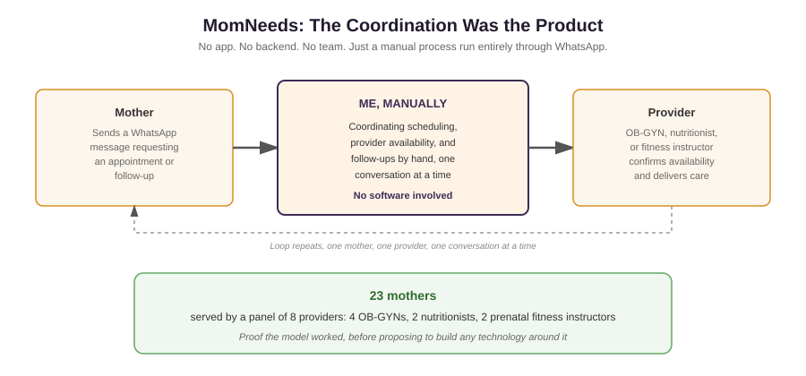

Prenatal and postnatal care in India is scattered across specialists, OB-GYNs, nutritionists, fitness instructors, who almost never talk to each other, leaving mothers to piece their own care together. There was no infrastructure to test whether a coordinated model could actually work, and no budget to build one. Whatever I tested had to run on tools that already existed.
This was self-funded, built alongside a full time graduate program, with no engineering team and no money for custom software. The whole thing had to run through a channel mothers and providers already used every day, so I could start testing immediately instead of waiting on a product that would probably never get built.
I onboarded a small group of providers, 4 OB-GYNs, 2 nutritionists, and 2 prenatal fitness instructors, and put together a subscription model bundling virtual consultations, nutrition guidance, and fitness support. I ran the entire booking and scheduling process myself, by hand, through WhatsApp, coordinating appointments and follow ups directly with 23 mothers. There was no app, no backend, no team. The coordination itself was the product, proof that the model could work before ever proposing to build software around it.
23 mothers got coordinated prenatal and postnatal care through a panel of 8 providers, run entirely through manual chat. It paused in March 2021, not because the idea failed, but because keeping it going meant more time and money than I had once student loans and a second master's degree needed my full attention. It was a deliberate stop, not an unresolved failure.
This is the smallest, least resourced venture in this whole story, and that's exactly why it matters. With no funding, no team, and no software, I designed and personally ran a real care coordination service for real mothers and real providers, proving the model worked before any technology existed around it. It's the same discipline, testing something at its rawest before investing in infrastructure, that shaped everything I built afterward with more resources behind it.